This vignette explains how the datasets were prepared, cleaned, and structured for inclusion in the Bushfire Data Explorer package. It highlights preprocessing steps, handling of missing values, and feature creation — ensuring data integrity and reproducibility.
Two datasets were used:
a1_media — Summarising media coverage and communication styles across Australian news articles.
a2_bushfire — Historical bushfire-related climate metrics from 1900–2020, including:
Fire Weather Index (FWI)
Maximum Temperature (TX7x)
Annual Rainfall (Rain_mm)
Data cleaning and transformation steps were automated using reproducible R scripts in the data-raw/ folder:
Importing raw data CSV files were read using readr::read_csv() and checked for missing or inconsistent values.
Variable standardisation Column names were converted to lower case; units were harmonised (e.g., rainfall in mm, temperature in °C).
Handling missing values Missing yearly values were interpolated where appropriate using zoo::na.approx() for continuous variables.
Feature creation Derived metrics such as mean annual rainfall and fire-weather index averages were computed using dplyr.
Saving for package use The cleaned datasets were saved as .rda objects via:
# usethis::use_data(a1_media, a2_bushfire, overwrite = TRUE)The analysis methods used in this package combine descriptive statistics, time-series smoothing, and visualisation through ggplot2.
library(bushfiredataexplorer)
library(dplyr)
library(ggplot2)
# Inspect the dataset structure
glimpse(a2_bushfire)
#> Rows: 121
#> Columns: 4
#> $ year <int> 1900, 1901, 1902, 1903, 1904, 1905, 1906, 1907, 1908, 1909, 19…
#> $ FWI <dbl> 12.741917, 9.203937, 11.392923, 12.265725, 12.141870, 11.45441…
#> $ TX7x <dbl> 28.52956, 30.24970, 29.25336, 30.37318, 30.07174, 30.01133, 28…
#> $ Rain_mm <dbl> 625.1696, 623.3106, 569.0539, 635.9992, 613.6708, 591.1323, 60…
# Example summarisation
a2_bushfire %>%
summarise(
mean_FWI = mean(FWI, na.rm = TRUE),
mean_TX7x = mean(TX7x, na.rm = TRUE),
mean_Rain = mean(Rain_mm, na.rm = TRUE)
)
#> # A tibble: 1 × 3
#> mean_FWI mean_TX7x mean_Rain
#> <dbl> <dbl> <dbl>
#> 1 30.0 37.4 499.
library(tidyr)
a2_long <- a2_bushfire |>
pivot_longer(-year, names_to = "metric", values_to = "value") |>
mutate(metric = factor(metric, levels = c("FWI","TX7x","Rain_mm"),
labels = c("Fire Weather Index (FWI)",
"Max Temp (TX7x, °C)",
"Annual Rain (mm)")))
ggplot(a2_long, aes(x = year, y = value)) +
geom_line(linewidth = 0.7, alpha = 0.8) +
geom_smooth(se = FALSE, method = "loess", span = 0.25) +
facet_wrap(~ metric, scales = "free_y", ncol = 1) +
labs(
title = "Bushfire Metrics Over Time (1900–2020)",
x = "Year", y = NULL
) +
theme_minimal(base_size = 13)
The package was built with:
Roxygen2 for documentation
pkgdown for static site generation
Shiny for interactive dashboards
ggplot2 and dplyr for visualisation and data wrangling
All analyses are reproducible using the provided functions and scripts, ensuring transparency and replicability.